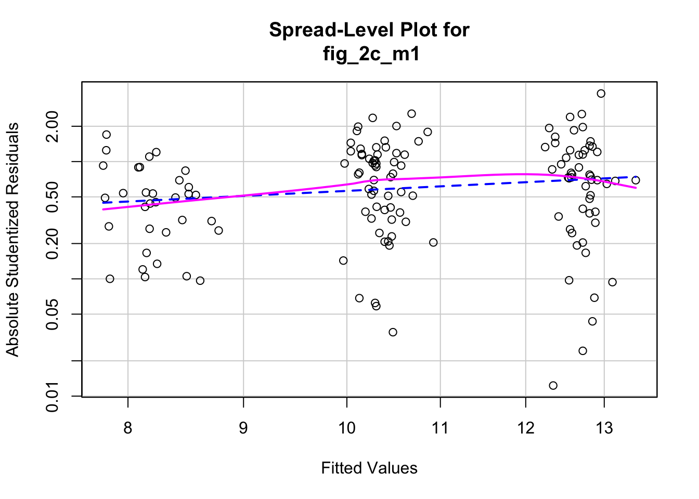
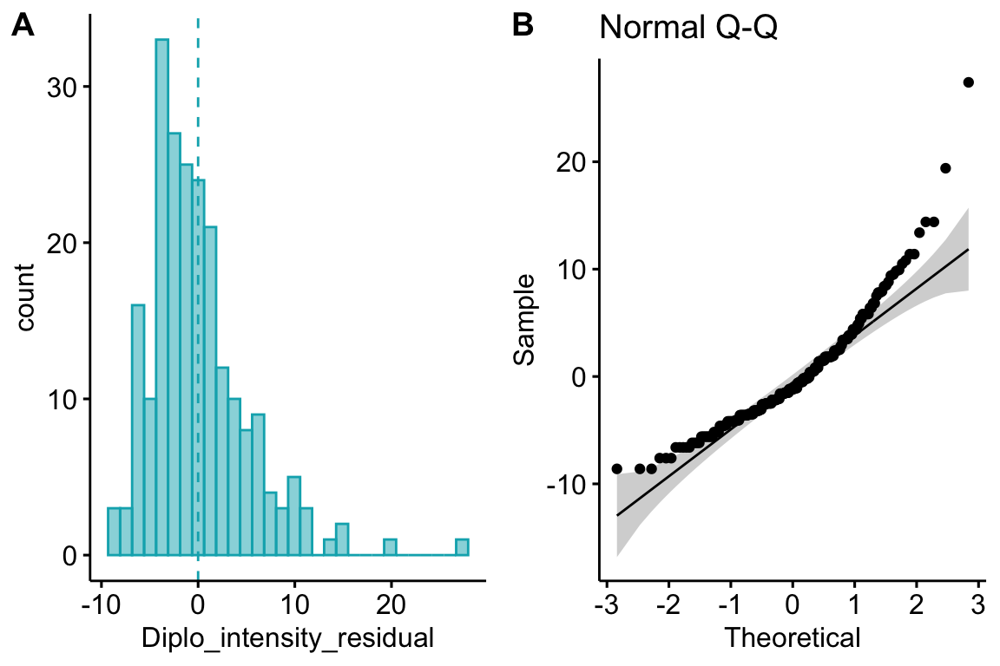
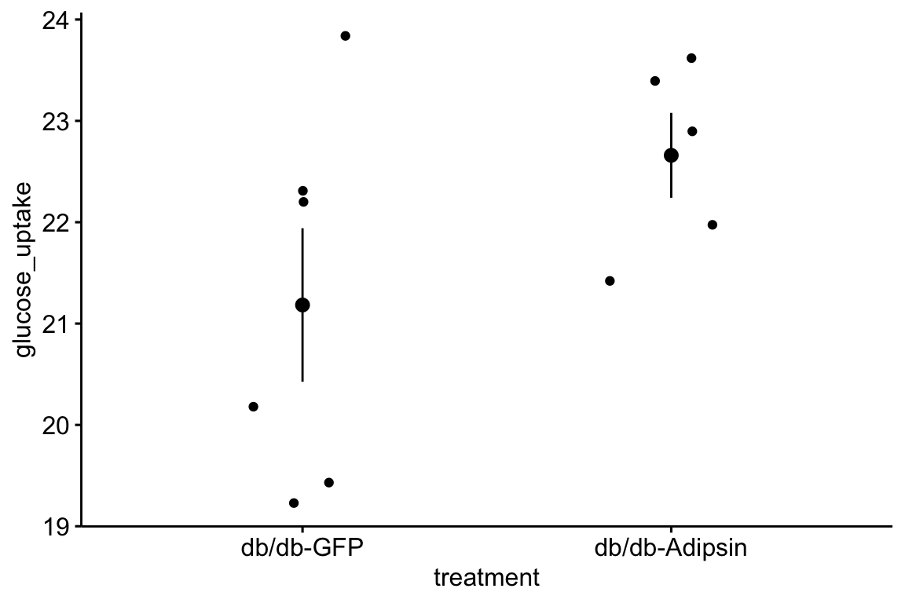
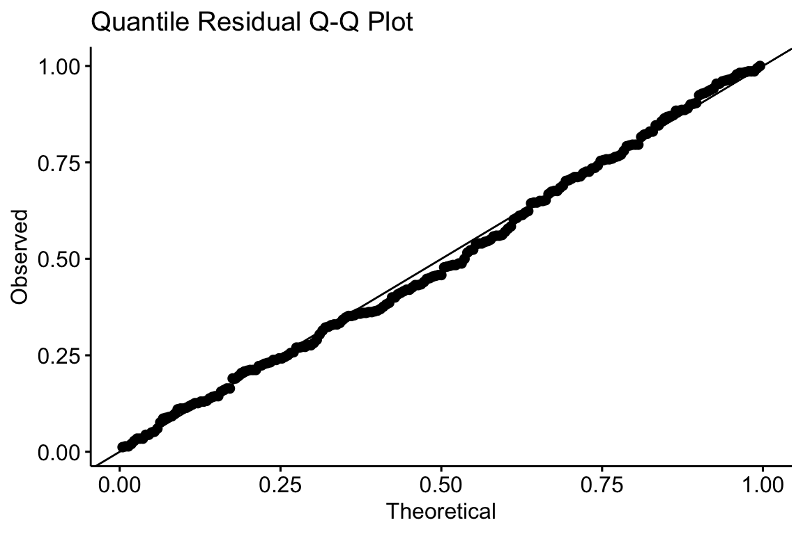

Chapter 12 Adding covariates to a linear model I: ANCOVA
In its most general sense, Covariates are simply the \(X\) variables in a statistical model. With data from experiments, “covariates” more typically refers to \(X\) variables that are added to a model to increase precision of the treatment effects. In observational designs, covariates might be added to a model to 1) increase predictive ability, 2) because the researcher is interested in specific conditional effects, or 3) to eliminate confounding. These are discussed in later chapters.
12.1 Adding covariates can increases the precision of the effect of interest
I use fake data to introduce the concept of statistical elimination of a covariate in a statistical model. Here I am modeling the effect of a new drug on blood LDL-C levels. LDL is a kind of lipoprotein, which are particles in the blood that transport fats and cholesterol to and from different tissues. LDL-C is cholesterol associated with LDL particles. LDL-C is considered “bad cholesterol” because LDL is believed to transport cholesterol and other lipids to arterial walls, which is the basis for atherosclerosis.
Twenty applied biostats students are recruited and are randomly assigned to either the new or old drug. The response is blood LDL-C level and the two treatment levels are “old” and “new”. For the dummy variable coding, I’ll make “old” the reference level.
Let’s model this with
\[\begin{equation} ldlc = \beta_0 + \beta_1 drug + \varepsilon \tag{12.1} \end{equation}\]where \(drug\) is the dummy variable with \(old=0\) and \(new=1\).

Figure 12.1: The fake LDL-C experiment.
## Estimate Std. Error t value Pr(>|t|)
## (Intercept) 161.640772 3.974506 40.6694043 3.620049e-19
## drugnew 1.785414 5.620800 0.3176442 7.544101e-01The plot shows large overlap in LDL-C and no obvious effect of the drug. There “is no effect of the drug (\(p = 0.754\))” is of course an incorrect interpretation of the hypothesis test of the estimate of \(\beta_1\). A correct interpretation is, there is too much noise to say much about any effect.
In addition to assigning treatment level randomly, I also had the 20 students count calories from fat over the course of the experiment. Here is a plot of LDL-C vs. percent calories from fat, with treatment assignment color coded. Remember, these are the exact same values of LDL-C as in the first figure.

Figure 12.2: Linear regression of \(ldlc\) on dietary \(fat\) fit to the fake LDL-C data. The points are color coded by treatment.
The line is the bivariate regression fit to the data ignoring treatment level so is the model
\[\begin{equation} ldlc = \beta_0 + \beta_1 fat + \varepsilon \tag{12.2} \end{equation}\]I’ve color coded the points by treatment level but \(drug\) is not in the model. It is clear that most of the “old” data points are above the line, or have positive residuals from the model, while the “new” data points are below the line, or have negative residuals from the model. A better way to think about this pattern is that at any specific level of fat, the LDL-C for old is higher than the LDL-C for new.
What is happening? Dietary fat is contributing to the variance of LDL-C and this added noise makes it harder to measure the effect of the new drug relative to the old drug. If we could somehow measure the effect of drug at a specific level of dietary fat, then we could get a more precise estimate of the effect. But how to do this?
We could just analyze a subset of the data, that is, only the cases in which the value of dietary fat is nearly equal. This throws away perfectly good data and, consequently, greatly reduces the sample size and thus precision to estimate the effect.
We could use the residuals of the fitted model (12.2) to estimate the effect of drug treatment (this is what we did by eye in figure 12.2). Here is the new model
where \(ldlc.r\) are the residuals. The effect of the new drug on these residuals is
## `stat_bindot()` using `bins = 30`. Pick better value with `binwidth`.
## Estimate Std. Error t value Pr(>|t|)
## (Intercept) 2.361321 0.6190269 3.814570 1.269495e-03
## drugnew -4.722642 0.8754362 -5.394616 3.984159e-05In this two-stage analysis (stage 1: fit ldlc ~ fat to get residuals, stage 2: fit residuals ~ drug), we have eliminated the effect of dietary fat on the variance of the response and, as a consequence, the estimate of the effect of the drug is much more precise. Now the estimate of the effect is -4.7 mg/dL blood and the SE is only .9 (compare this to the values in the original analysis). While the SE of the diference is correct, any confidence interval or \(t\)-value is not because the df is wrong. In the two stage analysis we fit two parameters – the slope (coefficient \(b_1\)) in stage 1 and the difference in means (coefficient \(b_1\)) in stage 2 – but the \(t\) in the table assumes we only fit one parameter (that from stage 2). Effectively, the stage 2 test is ignorant that the data (\(ldlc.r\)) are the result of a previous model fit. We could manually modify the computation of \(t\), but the more proper method is to simply…
- Add dietary fat into the original linear model.
## Estimate Std. Error t value Pr(>|t|)
## (Intercept) 99.449257 2.2812187 43.59479 6.880431e-19
## fat 203.773799 7.2192309 28.22652 1.009563e-15
## drugnew -5.128034 0.8711147 -5.88675 1.794002e-05Here, the estimate is -5.1 and the SE is 0.9. Look back at the script generating the fake data; the true effect (\(\beta_1\)) of the new drug was set to -5.0 so this estimate is quite good.
12.1.1 Interaction effects with covariates
12.1.2 Add only covariates that were measured before peaking at the data
12.2 Regression to the mean
It is common to measure the outcome variable (\(Y\)) both before and after the experimental treatments are applied and then compare the pre-post change in \(Y\) in response to the treatment using a \(t\)-test or ANOVA. Don’t do this.
Instead, add the pre-treatment measure into the model as a covariate.
\[\begin{equation} Y_{post} = \beta_0 + \beta_1 Y_{pre} + \beta_2 Treatment + \varepsilon \tag{12.4} \end{equation}\]where \(Treatment\) is a dummy variable for a two-level factor. A pre-treatment measure (\(Y_{pre}\)) is often called the baseline measure. The change in \(Y\) (\(\Delta Y = Y{post} - Y_{pre}\)) is sometimes called a change score or gain score. \(\Delta Y\) can be modeled as in equation (12.4) and the \(p\)-value will be precisely the same (the estimate and SE will differ of course because the response variable is different).
\[\begin{equation} \Delta Y = \beta_0 + \beta_1 Y_{pre} + \beta_2 Treatment + \varepsilon \tag{12.5} \end{equation}\]The reason why a researcher should not model \(\Delta Y\) as a function of \(Treatment\) without \(Y_{pre}\) as a covariate is that the regression to the mean. To explain regression to the mean, I use fake data simulated to model the results from an important study on gut microbiomes. In this study, the authors (Turnbaugh et al. xxx) showed that mice with feces from obese (genotype ob/ob) donors had higher weight gain than mice with feces from lean (genotype +/+) donors, presumably because of the differences in microbial communities between the donor types (shown elsewhere in their paper). To support the inference of a large difference in weight change, they illustrated the percent change in each treatment level in their Fig 3C, which is replicated here using simulated data generated to match the original summary statistics (Figure 12.3).

Figure 12.3: Figure 3c of Turnbaugh et al 2006. This figure was generated with simulated data matching the summary statistics given in Turnbaugh et al 2006
That looks like a big difference, with the mice from the obese-donor treatment level gaining much more fat than the mice from the lean-donor treatment level. Turnbaugh et al. used a simple t-test of this percent change to test the effect of the ob/ob treatment. The linear model underneath this \(t\)-test is
\[\begin{equation} fat.gain = \beta_0 + \beta_1 obese + \varepsilon \end{equation}\]where \(fat.gain\) is the percent gain in fat from baseline and \(obese\) is a dummy variable with ob/ob \(= 1\). The model coefficients are
## Estimate Std. Error t value Pr(>|t|)
## (Intercept) 25.24015 5.627515 4.485134 0.0003259533
## treatmentob/ob 21.92156 8.176589 2.681016 0.0157879742## 2.5 % 97.5 %
## (Intercept) 13.367137 37.11317
## treatmentob/ob 4.670468 39.17266Or, the increase in fat in the obese-treated mice was 21.9% (95%CI: 4.7, 39.2%, \(p=0.016\)) greater than the increase in lean-treated mice. This result, if generally verified with replication and rigorous probing, would have spectacular implications for human health.
One might reasonably expect that if mice are randomized into two groups, then the expected difference in percent change from baseline is zero. This is unconditionally true but not conditionally true. That is, if we ignore initial fat weight, the expected difference is zero. But, the expected difference is also conditional on the initial difference in fat weights. More specifically, the expected difference is opposite in sign but proportional in magnitude to the initial difference. This conditional expectation is a consequence of regression to the mean. If the first measure of a random variable is extreme, the second measure will tend to be less extreme. And, if a second measure is extreme, the first measure will tend to be less extreme.
Despite random treatment assignment, the mean initial fat weight of the ob/ob group was 1.2SD less than the mean initial weight of the +/+ group. By contrast, the mean final weight of the ob/ob group was 0.06SD larger than the mean final weight of the +/+ group. This first difference is an extreme measure. The second is extremely close to the expectation if there is no treatment effect. Because the initial difference in weight is unusually negative, the expected difference in percent change will be unusually positive.
This dependency between difference in percent change from baseline and difference in initial weight is easy to simulate. Simply
- randomly sample a normal distribution as the “initial weight” and randomly assign to treatment class
- let the final weight have some correlation (\(\rho\)) with the initial weight. Some correlation should make sense – we expect a mouse that has more fat than average at the start of the experiment to also have more fat than average at the end of the experiment. Run the experiment at different values of this correlation to see how it effects regression to the mean.
- Do not add a treatment effect. We want to explore the behavior of the nill null hypothesis.
![Effect of initial difference in weight on the difference in change score. Increased initial difference in weight results in an increased differences in change score between treatment and control. Four different values of *rho* (the correlation between initial and final weights) were simulated. Only when *rho*=1 is there no influence of initial difference, because whatever differences occur at baseline will be perfectly preserved in the final measure. The X gives the values in the original Turnbaugh data](Walker-elementary-statistical-modeling-draft_files/figure-html/ancova-sim1-1.png)
Figure 12.4: Effect of initial difference in weight on the difference in change score. Increased initial difference in weight results in an increased differences in change score between treatment and control. Four different values of rho (the correlation between initial and final weights) were simulated. Only when rho=1 is there no influence of initial difference, because whatever differences occur at baseline will be perfectly preserved in the final measure. The X gives the values in the original Turnbaugh data
What’s happening in Figure 12.4? Each point is a result for a single, simulated experiment. In total, there are 1000 simulated experiments for each of four values of \(\rho\). The x-axis is the difference between the means of the two treatment levels at baseline (Initial difference). The y-axis is the difference in mean change score between the two treatment levels – that is the difference in the means of \(\Delta Y\) from equation (12.5). This difference in \(\Delta Y\) is the effect of the treatment the researchers are interested in. The unconditional expectation of this difference is zero
\[\begin{equation} \mathrm{E}(\Delta Y_{ob/ob} - \Delta Y_{+/+}) = 0 \end{equation}\]but the change conditional on baseline is not zero
\[\begin{equation} \mathrm{E}(\Delta Y_{ob/ob} - \Delta Y_{+/+}) \ne 0 \end{equation}\]Instead, the conditional expectation is a function of the difference at baseline. If the initial difference in weight happens to be unusually large and negative, the expected difference in change score is unusually positive. This non-zero expectation means that the estimate of the treatment effect is conditionally biased for any model that does not include the baseline fat weight as a covariate. And, from a frequentist perspective, the Type I error for a test of a difference in \(\Delta Y\) is strongly dependent on the initial difference in weight.
The big X in the plot indicates the difference at baseline and difference in \(\Delta Y\) for the original mice study. The difference in \(Delta Y\) is unusually positive (about .6% of the \(|\delta Y|\) are larger) but very close to the expected value given the unusually large, negative difference at baseline. In other words, the probability of the data, or more extreme than the data, is not 0.006 but something larger and perhaps, much larger (the computed value depends on the observed \(\rho\). From, the plot, the X is very unusual if \(\rho=1\), pretty unusual if \(\rho=0.66\), but pretty common if \(\rho=0.33\) or if \(\rho=0\)).
12.2.1 Do not use percent change, believing that percents account for effects of initial weights
Some researchers mistakenly believe that a \(t\)-test of percent change automatically adjusts for effects in initial weight, since this initial weight is in the denominator of the percent. This is wrong. The dependency of the difference in change between treatments on the initial difference between treatments is more severe if change is measured as a percent, because the numerator (the change score) is expected to be larger if the denominator is smaller (initial measure). Using the simulated data from above, here is this dependency.

Figure 12.5: Effect of initial difference in weight on the difference in percent change. Increased initial difference in weight results in an increased differences in Percent change between treatment and control. Four different values of rho (the correlation between initial and final weights) were simulated. Note there is no value of rho where the difference in percent change is independent of the initial difference. The X gives the values in the original Turnbaugh data.
12.2.2 Do not “test for balance” of baseline measures
Contrary to some advice and maybe to intuition, it makes no sense to “test for balance” at baseline with a t-test of the difference in initial measures of \(Y\). And, it makes no sense to use this test as a decision rule for how to proceed: if \(p>0.05\) then use a simple \(t\) test of the change scores, if \(p<0.05\) then use ANCOVA with baseline measures in the model. First, a null-hypothesis significance test cannot tell you that there is “no difference” – this is not what null-hypothesis tests do. Second, any \(p\)-value after the initial test isn’t strictly valid as it does not take into account this decision step, but this is minor. Third, it doesn’t matter; there will always be some difference in the actual means of the initial measures and, consequently, the conditional expectation of the final measures, or change in measures, or percent change will be dependent on this initial difference. So, if one has initial measures, one should use an linear model that adjusts for baseline measures to estimate the treatment effect in pre-post designs. And, if one isn’t planning on taking an initial measure, then maybe you should, because the initial measure used in a linear model allows a better estimate of the treatment effect!
Biologists frequently count stuff, and design experiments to estimate the effects of different factors on these counts. For example, the effects of environmental mercury on clutch size in a bird, the effects of warming on parasite load in a fish, or the effect of exercise on RNA expression.
Count data differ from data with Normal error in many ways, including 1) counts are discrete 2) counts tend to bunch up on the small side of the range, creating a distribution with a positive skew, 3) counts can be zero, and a sample of counts can have an abundance of zeros, and 4) the variance of count data tends to increase with the mean (see Figure 12.6 for some of these properties). Some count data can be approximated by a normal distribution and reasonably modeled with a linear model but more often, count data are modeled with something other than a normal distribution using a generalized linear model (GLM). Back before modern computing and fast processors, count data were often analyzed by either transforming the response or by non-parametric hypothesis tests. I prefer a GLM because both the analysis of transformed data and non-parametric hypothesis tests are really a response to “correct” \(p\)-values instead of interpretable parameter estimates.

Figure 12.6: Histogram of the count of a trematode parasite larvae in Control vs. Infected fish. Fish in the Infected treatment are infected with a tapeworm.
12.3 The generalized linear model
Section [Assumptions for inference with statistical models] in Chapter 1 introduced two ways of defining a statistical model fit to data.
- Definition using a distribution of the error term
- Definition using the response as a combination of stochastic and deterministic components
A generalized linear model has has these two parts of the second definition but adds a third part
- A probability distribution from the exponential family (this is the stochastic part) \[\begin{equation} Y \sim P(\mu) \end{equation}\]
- a linear predictor of the form (this is the deterministic part) \[\begin{equation} \eta=\beta_0 + \beta_1 X \end{equation}\]
- a link function connecting the two parts \[\begin{equation} \eta = g(\mu) \end{equation}\]
\(mu\) (the Greek symbol mu) is the conditional mean (or expectation \(\mathrm{E}(Y|X)\)) of the response on the response scale and \(\eta\) is the conditional mean of the response on the link scale. A GLM models the response with a distribution specified by the probability distribution using the link function. The probability distributions introduced here are the Poisson and Negative Binomial for count data, and the Binomial for binary data. Note that a linear model is a GLM with a link to a Normal distribution.
The link scale is linear (it is the log of the response scale), and so the effects are additive on the link scale, while the response scale is nonlinear (it is the exponent of the link scale), and so the effects are multiplicative on the response scale. If this doesn’t make sense now, an example is worked out below. The inverse of the link function backtransforms the parameters from the link scale back to the response scale. So, for example, a prediction on the response sale is \(\mathrm{exp}(\hat{\eta})\) and a coefficient on the response scale is \(\mathrm{exp}(b_j)\).
12.4 Count data example
The example is an experiment measuring the effect of the parasitic tapeworm Schistocephalus solidus infection on the susceptibility of infection from a second parasite, the trematode Diplostomum pseudospathaceum, in the threespine stickleback fish Gasterosteus aculeatus. The treatment levels are “Control” (unexposed to the tapeworm), “Uninfected” " (exposed to the tapeworm but uninfected), “Infected LG” (exposed and infected with the low growth population of the tapeworm), and “Infected HG” (exposed and infected with the high growth population of tapeworm). The response is the number of trematode larvae counted in the eyes (right and left combined) of the fish. A histogram of the counts is shown in Figure 12.6 for the control and Infected HG treatment levels.
I start the analysis by fitting a linear model to the worm data and then model checking, to gain some insight on how well the linear model fits the data
NHST blues Students are often encouraged by textbooks, colleagues, or the literature to start the analysis by first “testing” assumptions with hypothesis tests – for example using a Shaprio-Wilks test of normality as a decision rule to decide if to use a parametric test such as a \(t\)-test or ANOVA if the null hypothesis of normality is not rejected, or a non-parametric test such as a Mann-Whitney U test if the null hypothesis of normality is rejected. I advise against this, because 1) this pre-test filtering automatically invalidates the \(p\)-value of the hypothesis test as it does not adjust for the filtering procedure, 2) real data are only approximately normal and as \(n\) increses, a normality test will reject any real dataset, and 3) hypothesis tests are pretty robust to non-normality anyway.
The model is
\[\begin{align} Y &= N(\mu, \sigma)\\ \mu &= \beta_0 + \beta_1 Treatment \end{align}\]Which models the parasite count conditional on \(Treatment\) with a Normal distribution. Remember, this is equivalent to a model with an error term with a Normal distribution (now might be a good time to go back to Chapter 1 and review the section [Assumptions for inference with statistical models]).
12.4.1 Checking the model I – a Normal Q-Q plot

Figure ??A shows a histogram of the residuals from the fit linear model. The plot shows that the residuals are clumped at the negative end of the range, which suggests that a model with a normally distributed conditional outcome (or normal error) is not well approximated.
A better way to investigate this is with the Normal Q-Q plot in Figure ??B, which plots the sample quantiles for a variable against their theoretical quantiles. If the conditional outcome approximates a normal distribution, the points should roughly follow the line. Instead, for the worm data, the points are above the line at both ends. At the left (negative) end, this means that we aren’t seeing the most negative values that would be expected (the observed values are more positive than the theoretical values). Remembering that this plot is of residuals, if we think about this as counts, this means that our smallest counts are not as small as we would expect given the mean and a normal distribution. This shouldn’t be surprising – the counts range down to zero and counts cannot be below zero. At the positive end, the sample values are again more positive than the theoretical values. Thinking about this as counts, this means that are largest counts are larger than expected given the mean and a normal distribution. This pattern is exactly what we’d expect of count data, or at least count data that borders zero.
Intuition Pump Let’s construct a Normal Q-Q plot. A quantile (or percentile) of a vector of numbers is the value of the point at a specified percentage rank. The median is the 50% quantile. The 95% confidence intervals are at the 2.5% and 97.5% quantiles. In a Normal Q-Q plot, we want to plot the quantiles of the residuals against a set of theoretical quantiles.
- To get the observed quantiles, rank the residuals of the fit linear model from most negative to most positive – these are your quantiles! For example, if you have \(n=145\) residuals, then the 73rd point is the 50% quantile.
- A theoretical quantile from the Normal distribution can be constructed using the
qnormfunction which returns the Normal quantiles for a specified vector of percents. Alternatively, one could randomly sample \(n\) points usingrnorm. These of course will be sampled quantiles so will only approximate the expected theoretical quantiles, but I add this here because we use this method below.
Now simply plot the observed against theoretical quantiles. Often, the standardized quantiles are plotted. A standardized variable has a mean of zero and a standard deviation of one and is computed by 1) centering the vector at zero by subtracting the mean from every value, and 2) dividing each value by the standard deviation of the vector. Recognize that because a standard deviation is a function of deviations from the mean, it doesn’t matter which of these operations is done first. A standardized theoretical quantile is specified by qnorm(p, mean = 0, sd = 1), which is the default.
Below, I’ve plotted the standardized observed and theoretical quantiles against the vector of percents (from 0 to 100%). This plot also nicely shows how the residuals of the worm data deviate from that expected if these had a normal distribution. The plot nicely shows that the most negative observed quintiles are not as negative as expected given a normal distribution, which again makes sense because this would imply negative counts since the mean is close to zero. And it nicely shows that the most positive observed quantiles are more positive than expected given a normal distribution, again this makes sense in right skewed count data. Finally, the plot nicely shows that the median is less positive than that expected given a normal distribution, which is at the mean (a right skew tends to pull the mean to the right of the median).

12.4.2 Checking the model II – scale-location plot for checking homoskedasticity
worm[, scale_y:= sqrt(abs(scale(Diplo_intensity_residual)))]
worm[, fitted_y:=fitted(fit.lm)]
ggscatter(data=worm,
x="fitted_y",
y="scale_y",
add="reg.line",
conf.int = TRUE,
add.params = list(color = "blue",
fill = "lightgray"),
title="Scale-Location",
ylab="Square root standardized residuals",
xlab="Fitted value"
)
A linear model also assumes the error has constant variance (that is, the error variance is not a function of the value of \(X\)), or homoskedasticity. The fit model can be checked for homoskedasticity using a scale-location plot, which is a scatterplot of the positive square-root of the standardized residuals against the fitted values1. If the residuals approximate a normal distribution, then a regression line through the scatter should be close to horizontal. The regression line in the scale-location plot of the fit of the linear model to the worm data shows a distinct increase in the “scale” (the square root of the standardized residuals) with increased fitted value, which is expected of data that are lognormally, Poisson, or negative binomially distributed.
12.4.3 Two distributions for count data – Poisson and Negative Binomial
The pattern in the Normal Q-Q plot in Figure ??B should discourage one from modeling the data with a normal distribution and instead model the data with an alternative distribution using a Generalized Linear Model. There is no unique mapping between how data are generated and a specific distribution, so this decision is not as easy as thinking about the data generation mechanism and then simply choosing the “correct” distribution. Section 4.5 in Bolker (xxx) is an excellent summary of how to think about the generating processes for different distributions in the context of ecological data. Since the response in the worm data are counts, we need to choose a distribution that generates integer values, such as the Poisson or the negative binomial.
- Poisson – A Poisson distribution is the probability distribution of the number of occurrences of some thing (an egg, a parasite, or a specific mRNA transcript) generated by a process that generates the thing at a constant rate per unit effort (duration or space). This constant rate is \(\lambda\), which is the expectation, so \(\mathrm{E}(Y) = \mu = \lambda\). Because the rate per effort is constant, the variance of a Poisson variable equals the mean, \(\sigma^2 = \mu = \lambda\). Figure ?? shows three samples from a Poisson distribution with \(\lambda\) set to 1, 5, and 10. The plots show that, as the mean count (\(\lambda\)) moves away from zero, a Poisson distribution 1) becomes less skewed and more closely approximates a normal distribution and 2) has an increasingly low probability of including zero (less than 1% zeros when the mean is 5).
A Poisson link function, then, is useful for count data in which the conditional variance is close to the conditional mean. Very often, biological count data are not well approximated by a Poisson distribution because the variance is either less than the mean, an example of underdispersion2, or greater than the mean, an example of overdispersion3. A useful distribution for count data with overdispersion is the negative binomial.

- Negative Binomial – The negative binomial distribution is a discrete probability distribution of the number of successes that occur before a specified number of failures \(k\) given a probability \(p\) of success. This isn’t a very useful way of thinking about modeling count data in biology. What is useful is that the Negative Binomial distribution can be used simply as way of modeling an “overdispersed” Poisson process. The mean of a negative binomial variable is \(\mu = k\frac{p}{1-p}\) and the variance is \(\sigma^2 = \mu + \mu^2/k\). As a method for modeling an overdispersed Poisson variable, \(k\) functions as a parameter controlling the amount of overdispersion and can be any real, positive value (not simply a positive integer), including values less than 1.
12.4.4 Fitting a GLM with a Poisson link to the worm data
Let’s fit a GLM with a Poisson lin to the worm data. The model is
\[\begin{align} Diplo\_intensity &\sim Poisson(\mu)\\ \mathrm{E}({Diplo\_intensity|Treatment}) &= \mu\\ \mu &= \mathrm{exp}(\eta)\\ \eta &= \beta_0 + \beta_1 Uninfected + \beta_2 Infected\_LG + \beta_3 Infected\_HG \end{align}\]A common misconception is that if the distribution of the response approximates a Poisson distribution, then the residuals of a GLM fit with a Poisson link should be normally distributed, which could then be checked with a Normal Q-Q plot, and homoskedastic, which could be checked with scale-location plot. Neither of these is true because a GLM does not transform the data and, in fact, the model definition does not specify anything about the distribution of an “error” term – there is no \(\varepsilon\) in the model defintion above! This is why thinking about the definition of a linear model by specifying an error term with a normal distribution can be confusing and lead to misconceptions when learning GLMs.
An alternative to a Normal Q-Q plot is a plot of quantile residuals.

12.4.5 Fitting a GLM with a Negative Binomial link to the worm data
## DHARMa::plotResiduals - low number of unique predictor values, consider setting asFactor = T
## DHARMa::plotResiduals - low number of unique predictor values, consider setting asFactor = T
##
## One-sample Kolmogorov-Smirnov test
##
## data: simulationOutput$scaledResiduals
## D = 0.044362, p-value = 0.7772
## alternative hypothesis: two-sided
##
## DHARMa nonparametric dispersion test via sd of residuals fitted
## vs. simulated
##
## data: simulationOutput
## ratioObsSim = 1.0153, p-value = 0.816
## alternative hypothesis: two.sided